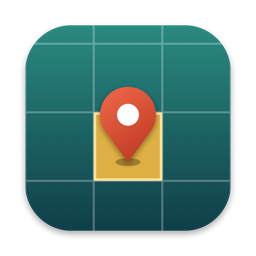

G3AJM
Alastair Moore · small, free Mac tools for radio amateurs
Apps

Locator
Menu bar app · macOS 14 or later · Intel and Apple Silicon
Your Maidenhead locator in the menu bar, worked out from your Mac’s location. Click it for:
- 8-character locator, coordinates, and fix accuracy and time (UTC)
- CQ zone and ITU zone
- WAB square in Great Britain, the Isle of Man, Ireland and the Channel Islands
- Click any value to copy it
Everything is worked out on your Mac; your position isn’t sent anywhere.
CW Notebook
macOS 15 or later · Intel and Apple Silicon
A simple note taker for CW operating, in the style of Apple Notes, with a reference panel beside your notes.
- Everything comes out in capitals, without Caps Lock
- Prosigns, Q-codes and abbreviations: search, then click to insert
- Live UTC clock; click it to insert the time
- Notes are plain Markdown files in iCloud Drive, with folders
Installing
Unzip the download and move the app to your Applications folder.
The apps aren’t notarised by Apple, so the first time you open one, macOS will refuse. Go to System Settings › Privacy & Security, scroll down and click Open Anyway. You only need to do this once.